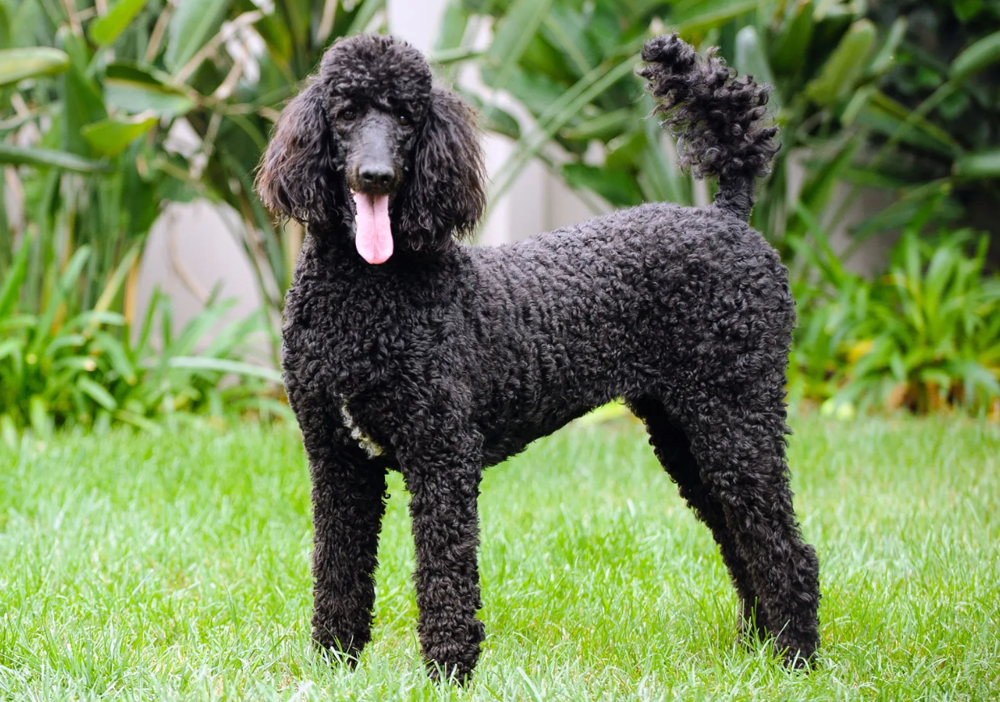

POODLE
Weight:
45-50 lbs.
55-60 lbs.
Length:
Long .
Color:
Any solid color including white, black, gray, blue, silver, brown and apricot.
Longevity:
10 – 14 yrs.
Poodle personality
Poodles are notorious for their intelligence and ease of training. They are lively, active, fun-loving dogs with a sense of the ridiculous. Poodles thrive on attention and can develop bad habits such as nuisance barking if ignored or left alone.The smaller poodles can be aggressive to people outside their families or to other dogs. They should have early socialization to other people and pets and a firm hand in training. Poodles can be protective of their families and homes.It should be remembered that poodles are basically hunting dogs in elegant attire and do require exercise and training to be at their best as companion dogs.
What to expect
Poodles are easy keepers, and guardians should not indulge them with treats too much. They can easily become overweight. Many poodles live a comparatively long life, with the smaller poodles reaching as much as 17 years of age, while the standards tend to live for 12 to 14 years.Grooming is a fact of life with a poodle. With the tendency of the coat to mat, poodles should have a close clip or be groomed almost daily. Show coats require frequent baths, the tying up of topknots and ear fringes and oiling of the coat to keep it from getting brittle. A steady hand on the scissors is also important.Poodles are good family dogs — fun, energetic, smart and easy to train. They do best with plenty of exercise for both mind and body and prefer to be with people most of the time. They are not good kennel dogs. Socialization should begin early and include other people, other pets and the grooming routine. These dogs are exceptional jumpers, so be careful with your yard fencing!
History of the Poodle
While commonly associated with France, the poodle actually is of German origin, possibly descending from the barbet. The breed became set in type in the 1800s, although earlier examples of poodle-like dogs are known. The word poodle comes from the German pudel meaning puddle or splash.Poodles started out as hunting dogs, especially good at water retrieving. With their quick intelligence and desire to please, they branched out into performing dogs with traveling troupes and circuses. Aristocracy, particularly in France, discovered the breed and delighted in both the personality and the incredible hair coat, which could be shaped in myriad ways.Despite the new image of the poodle as an elegant, somewhat spoilt aristocrat, we should remember that they are still called caniches in France, meaning duck dog.The three varieties constitute one of the most popular breeds in the world. Poodles shine in the glamour of the show ring, but they also work as guide dogs for the blind and police dogs. They compete in all dog sports, from running the Iditarod and herding sheep to obedience and agility. The first proponent of obedience in the United States, Blanche Saunders, had Standard Poodles.